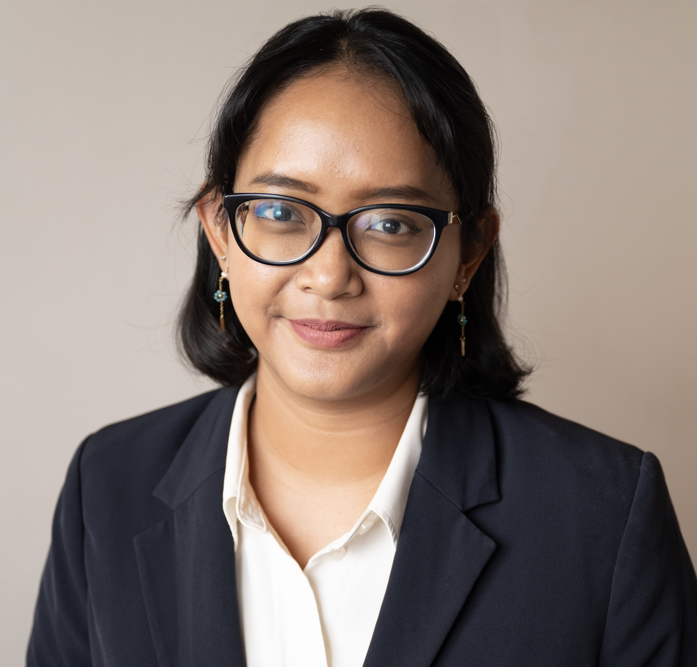

Consultante indépendante en droits humains et développement durable.
Plus de sept ans d'expérience dans le secteur associatif et le secteur privé, de la
coordination de programmes humanitaires et du montage de financements au reporting ESG et
à la comptabilité carbone.
J'accompagne les organisations dans la mise en œuvre de leurs engagements de durabilité,
de leurs obligations en matière de droits humains et de leurs programmes de développement,
avec des solutions fondées sur des données probantes et centrées sur les personnes.
Ce que je fais
À propos

Je suis Lidwina Pradipta Putri, professionnelle du développement durable et des droits humains, basée à Paris, avec une expérience professionnelle en Indonésie et en France.
Plus de cinq ans à l'OIM — Organisation internationale pour les migrations, en
Indonésie (2017-2023) : gestion de projet, levée de fonds, reporting
institutionnel, programmes de lutte contre la traite des êtres humains incluant
l'assistance à la protection des migrants, et formations à la prévention de
l'exploitation et des atteintes sexuelles (PEAS) et à la sauvegarde.
Une mission de conseil à l'UNESCO (2023-2024) sur les implications sociales des
politiques de transition climatique.
Plus récemment, une alternance en développement durable chez Sodexo (2025-2026), leader mondial de la restauration et des services durables : coordination du Carbon Disclosure Project (CDP), avec une amélioration du score de A– à A, consolidation des émissions des scopes 1, 2 et 3 dans 43 pays, et élaboration du plan de transition climatique conforme à la CSRD.
Je travaille délibérément à l'intersection de ces secteurs : une approche fondée sur des données probantes, centrée sur les personnes, et attachée au principe selon lequel la durabilité ne doit pas se faire au détriment des personnes ou de la planète qu'elle prétend servir.
Je suis titulaire d'une licence en relations internationales de l'Universitas Indonesia (mention cum laude), d'un master en droits humains et action humanitaire de Sciences Po — Paris School of International Affairs, et d'un MSc en marketing digital et data analytics de l'Institut de préparation à l'administration et à la gestion (IPAG Business School).
Actuellement
Correspondante climat en freelance pour South East Asia
Daily et Sustainability Associate chez Kala
Advisory, à la jonction entre l'Asie du Sud-Est et l'Europe.
Exploration de l'économie du bien-être avec la Wellbeing
Economy Alliance, et recherche sur les liens entre déplacements climatiques et traite
des êtres humains avec le Mobility for Climate Policy Research Institute.
Ma façon de travailler
Je pars des données et je les analyse rigoureusement avant de conclure.
J'essaie de voir le travail depuis la position des personnes qu'il concerne.
Les données et les personnes, traduites en décisions sur lesquelles les organisations agissent réellement.
Contact
Disponible pour des missions de conseil en freelance, des collaborations de recherche et des missions d'accompagnement. Tarif journalier communiqué sur demande.